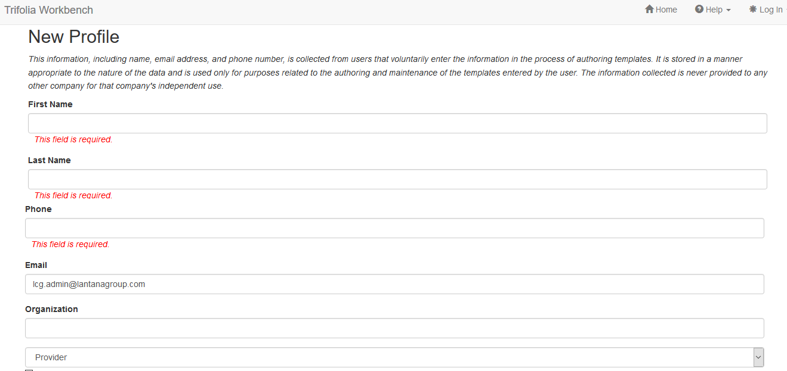

Logging In
Open-Source Authentication
The existing Active Directory and custom HL7 authentication has been replaced with a generic authentication method (OAuth 2.0). OAuth is an open standard for authorization, commonly used as a way for Internet users to log in to third party websites using their Google, Facebook, Microsoft, GitHub, etc. accounts without exposing their password.
As part of this migration, all existing Trifolia user accounts have been added/imported to the new OAuth Trifolia directory. Existing Trifolia users will receive a Password Reset link via e-mail that will allow them to use their Trifolia credentials when logging in using the Auth0. Clicking on the link in the email will direct the user to auth0.com and prompt the user to create a new password for your Trifolia account.
Existing users can use their Trifolia credentials to login, and pre-existing permissions to resources (implementation guides, templates, value sets, code systems, etc.), will persist. Each authentication method (Facebook, Microsoft Account, Username/Password, etc.) represents a separate user in Trifolia, with a separate username/password and permissions.
Please refer to the Security section for more information on access and permissions.
Log In to Trifolia
- In the upper-right corner, select Log In and choose Login from the drop-down menu. When users click the "Login" option. The Auth0 Log In page appears, as shown below

- Once you log in to Trifolia Workbench, the functions available depend on the access permissions granted to your login credentials.
- If it is the first time logging in, you will be prompted to enter "My Profile" information. See My Profile for more information. If are an existing user,
you can modify your My Profile information from the menu in the top-right corner.
